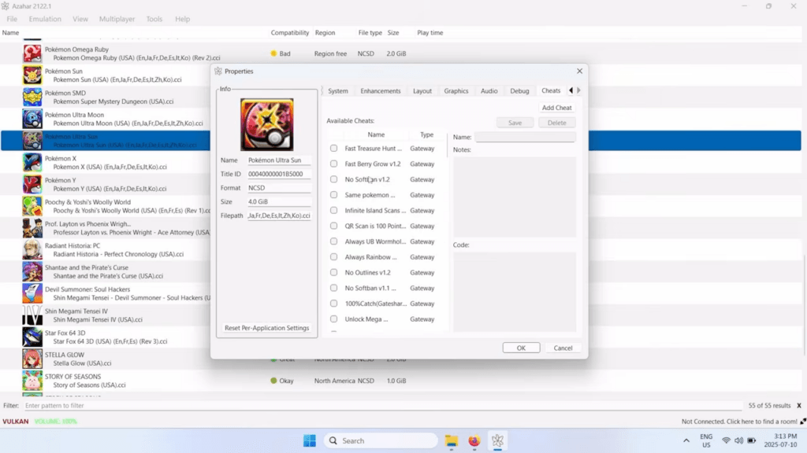
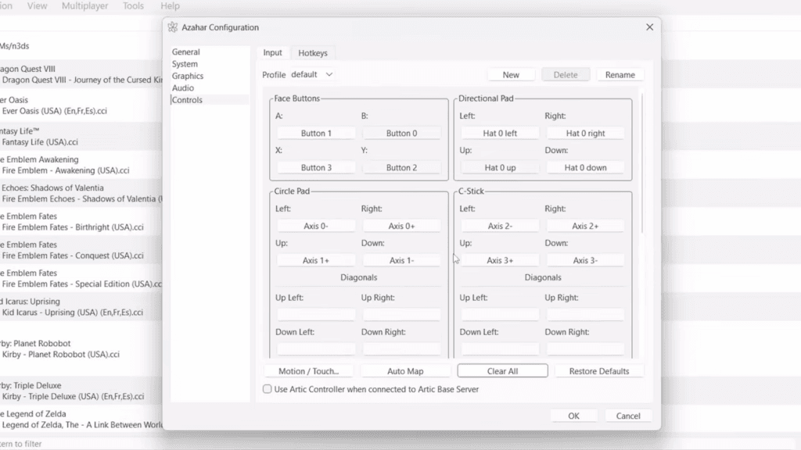

Azahar 用了八个月：从"又一个模拟器"到 3DS 怀旧日常
当初为了重温宝可梦装了 Azahar，八个月后它成了每天开机先点开的软件。聊聊这段时间里哪些变化真的用出了感情，哪些问题是时间越久越显眼。
为什么当初装上 Azahar
说出来有点老套——3DS 停产了，我手头那台老大三屏幕开始泛黄，电池充一次撑不过两小时。宝可梦究极日月打到一半，塞尔达时之笛 3D 还留了个迷宫没通。去咸鱼淘二手掌机吧，成色好的要价离谱，成色差的买回来还要自己换屏修摇杆。
就这么顺手搜了一下 3DS 模拟器，出来一堆名字：Citra、Lime3DS、Azahar……Citra 早就停更了，Lime3DS 也半死不活，Azahar 是当时看起来最"活"的那个，去官网看了一眼更新日志还在持续。从官方下载拿了安装包，没多想，纯粹想把那两款游戏通关再说。
越用越顺手的地方：分辨率缩放真的不是噱头
刚装上时最惊讶的是内部分辨率缩放。原版 3DS 上屏只有 240×400，在 2K 显示器上放大四倍之后，宝可梦身上的鳞片纹理、塞尔达迷宫墙壁上的砖纹，全都出来了。我原以为分辨率缩放只是"看起来清晰一点"，实际玩起来才发现——这东西彻底改变了 3DS 游戏在大屏幕上的观感。原来那些被像素糊住的细节，现在看得清清楚楚，连 NPC 脸上的表情变化都能捕捉到。

另一个让我越用越舒服的是键位映射。第一次打开默认键位时觉得"这什么鬼"，花了二十分钟按自己的习惯重新配了一套——方向键放 WASD，A/B/X/Y 放右侧小键盘，摇杆用手柄的左摇杆替代。配完之后直接导入配置文件，手机上也能走同一套键位逻辑。现在换任何设备都不用重新调，导一下就完事。
还有那个密钥导入流程。第一次用的时候折腾了好几天，不知道怎么从掌机上导出，也不知道放在哪个目录。后来才发现 Azahar 其实做了自动检测——只要把密钥文件放到用户数据目录下，模拟器启动时自动识别。现在帮朋友装 Azahar，密钥导入那步已经变成点几下的事了。
越用越烦的地方：安卓触控还是没搞定
八个月过去了，PC 端越用越顺手，但 Android 端的触控布局我到现在也没调好。默认布局是给 6 寸手机做的，我用的 7.2 寸平板，摇杆位置偏左、A 按钮偏下，每次玩都要在屏幕上重新拖动调整。调完保存的布局文件，重装模拟器之后还要手动导入——不能自动恢复，这一点让我挺郁闷。
振动反馈是另一个痛点。默认开启，但某些机型上振得比实体按键还狠，开久了手腕酸。关掉又觉得没反馈，好像按了个空气。我知道可以调强度，但每次切不同游戏都要重新调——宝可梦这种节奏慢的振动弱一点好，马里奥赛车这种快节奏的振动强一点有手感。为什么不能按游戏单独记振动设置？
还有那个杀毒软件误报。Azahar 安装包每次更新，我那台老联想的自带杀软都会弹窗。加了信任列表之后过了两个月又被移除，不知道是杀软自己的策略变了还是更新覆盖了配置。每次更新都要重新走一遍信任流程，挺烦人的。
每天离不开的：存档同步和 CIA 一键安装
如果要选一个八个月里用得最多的功能，不是分辨率缩放，也不是键位映射——是用户数据目录的可复制性。Azahar 把存档、设置、密钥、纹理包全放在 %APPDATA%\Azahar\ 下面，整目录复制就能完整迁移。PC 打好的存档，复制到笔记本上继续玩；家里打好的进度，打包带去公司摸鱼。Citra 和 Lime3DS 的存档它也能直接识别，当年从 Citra 转过来的时候，直接把旧目录复制过去就完事了，一点损失都没有。

第二个离不开的是 CIA 一键安装。游戏本体、更新包、DLC 全是 .cia 格式，菜单里选文件点一下就完事。更省心的是安装顺序——先装本体、再装更新、最后装 DLC，模拟器自动处理版本优先级，不用卸载旧版再装新版。CIA 装完之后还能把原始文件删掉省空间，解包进模拟器维护的虚拟 NAND 里了。
至于那些宣传里说的"纹理包支持""帧生成""宽屏补丁"——说实话八个月里碰都没碰过。帧生成功能说是能让游戏看起来更流畅，但我试了一次觉得画面有点假，就关了。纹理包装上之后游戏变得像换了一个，失去了原版那种像素风格的味道。宽屏补丁只对少数游戏有效，大部分游戏打上之后要么画面错位要么黑屏。
八个月后的观感修正：我高估了兼容覆盖，低估了社区生态
刚装 Azahar 时我以为"既然是 Citra 的继任者，那 Citra 能跑的游戏它都能跑"。事实证明不是。有那么几款冷门游戏，Citra 能正常进入，Azahar 上要么卡在 loading 要么画面花屏。不是说完全不兼容，而是那些边缘案例的处理还在迭代。我翻了一下问题追踪列表，这些问题被标记了但优先级不高——毕竟冷门游戏的开发者和玩家都少，修复起来投入产出比低。
反而是社区生态这一点，我当初严重低估了。Citra 停更之后，Lime3DS 和 Azahar 分裂出去各自维护，但社区没散——YouTube 上有教程视频、Reddit 上有问题排查、azahar文档里的内容在持续更新。我之前以为 Azahar 只是另一个没人管的分支，没想到背后有一群人在持续投入。最近三个月的更新日志里，bug 修复、性能优化、新功能加入一条接一条，这个活跃度在模拟器项目里不算差。
去留结论：不会卸载，但也不会到处安利
八个月用下来，Azahar 已经完全取代了我那台快要报废的老大三。每天开机先点开，宝可梦打到究极异兽、塞尔达通了时之笛之后又开了马里奥赛车，每周至少打开三四次。它不是什么完美模拟器，但对我这种只想把老游戏重新玩一遍的人来说，够用了。
不会卸载的原因很简单——目前没有更好的替代。Citra 停更了，Lime3DS 进度慢，其他模拟器要么兼容性差要么更新频率低。Azahar 不是最强的，但它是当前 3DS 模拟器里最"能打"的。
如果哪天出现了一个性能更好、兼容更广、而且社区同样活跃的新项目，我可能会考虑迁过去。但现阶段——等它哪天更新频率降到三个月以上不发新版本了，或者关键功能开始退化了，那时候可能就该换了。
怀旧游戏这件事说到底是吃冷饭，但冷饭炒得好不好、什么时候炒、炒成什么样，取决于有人还在不在炒。Azahar 就是那个还在认真炒冷饭的人之一，这就够了。如果你也想跟进，这套资料在GitHub、Gitee 和 GitCode 都能拿到。